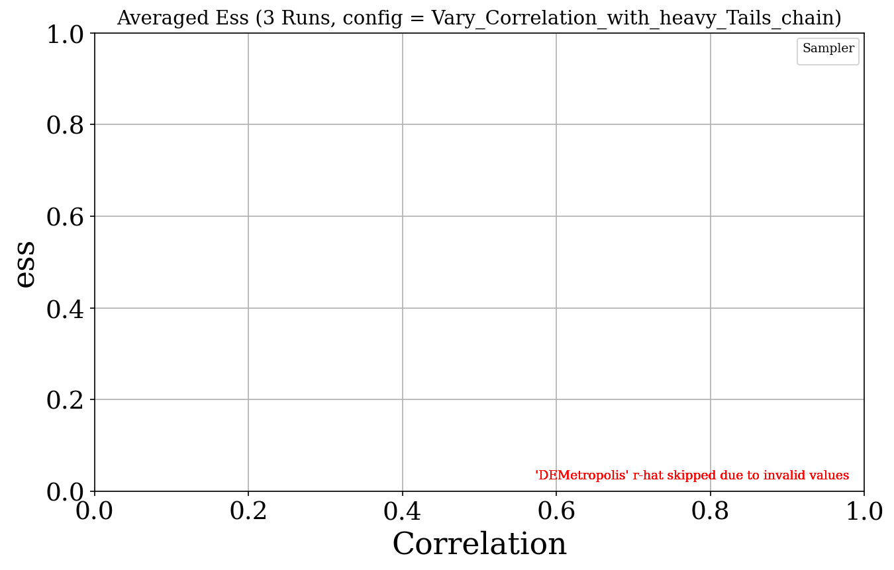
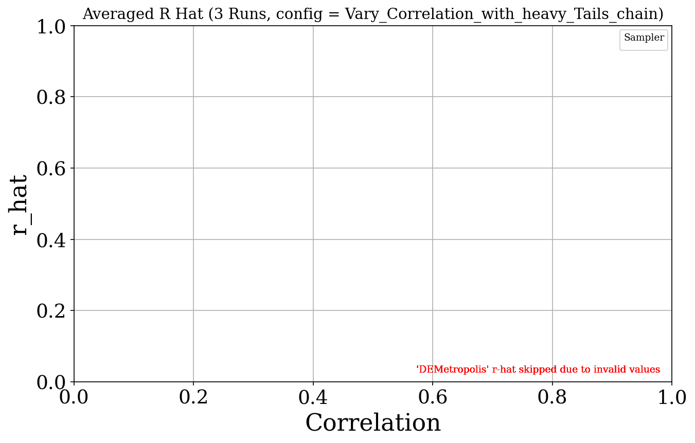
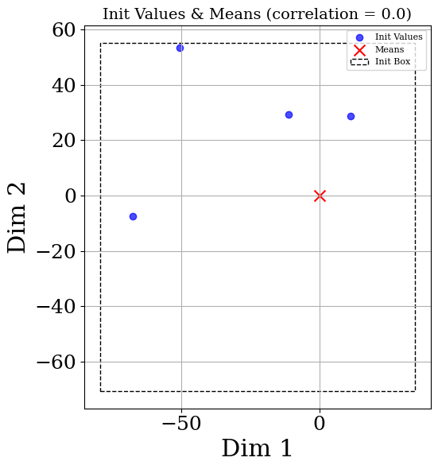
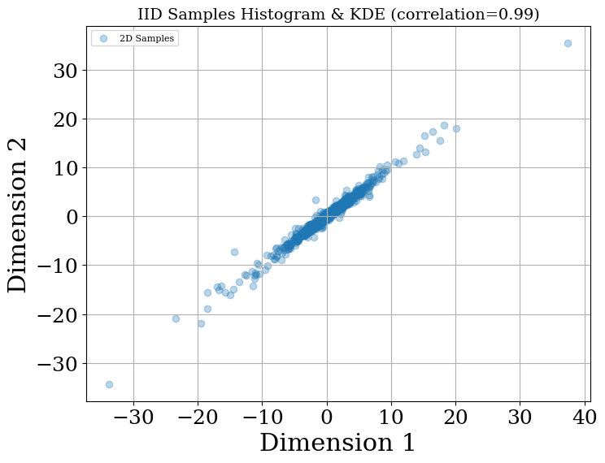

Correlation
▼Vary_Correlation_with_heavy_Tails (MvStudentT, correlation, 3 runs)
Pooled Chains results
Wasserstein Distance

Sampler vs IID stats
| Sampler | Varying | t-stat | p-value | Glass Δ |
|---|---|---|---|---|
| DEMetro_Z | 0.0 | 3.706 | 0.0557 | 9.282 |
| DEMetro_Z | 0.99 | 3.488 | 0.0264 | 3.137 |
| Metro | 0.0 | 12.816 | 0.000291 | 9.427 |
| Metro | 0.99 | 2.439 | 0.134 | 21.677 |
| HMC | 0.0 | 3.384 | 0.037 | 2.291 |
| HMC | 0.99 | 1.744 | 0.193 | 2.745 |
| SMC | 0.0 | 3.876 | 0.0421 | 6.719 |
| SMC | 0.99 | 1.499 | 0.244 | 0.929 |
Sampler vs Sampler stats
| Sampler Pair | Varying | t-stat | p-value | Cohen’s d |
|---|---|---|---|---|
| Metro_vs_SMC | 0.0 | 2.059 | 0.176 | 1.189 |
| Metro_vs_SMC | 0.99 | 2.315 | 0.147 | 1.337 |
| DEMetro_Z_vs_SMC | 0.0 | 0.646 | 0.585 | 0.373 |
| DEMetro_Z_vs_SMC | 0.99 | 3.811 | 0.0625 | 2.200 |
| HMC_vs_DEMetro_Z | 0.0 | -3.353 | 0.0786 | -1.936 |
| HMC_vs_DEMetro_Z | 0.99 | -0.192 | 0.865 | -0.111 |
| HMC_vs_SMC | 0.0 | -2.277 | 0.151 | -1.314 |
| HMC_vs_SMC | 0.99 | 1.078 | 0.394 | 0.622 |
| HMC_vs_Metro | 0.0 | -8.840 | 0.0126 | -5.104 |
| HMC_vs_Metro | 0.99 | -2.180 | 0.161 | -1.259 |
| Metro_vs_DEMetro_Z | 0.0 | 0.050 | 0.964 | 0.029 |
| Metro_vs_DEMetro_Z | 0.99 | 2.165 | 0.163 | 1.250 |
Wasserstein Distance (scatter)
Glass’s Δ WS

Glass’s Δ table
| Sampler | Varying | MCMC Mean | IID Mean | IID Std | Glass’s Δ |
|---|---|---|---|---|---|
| DEMetro_Z | 0.0 | 0.242 | 0.094 | 0.016 | 9.282 |
| DEMetro_Z | 0.99 | 0.237 | 0.127 | 0.035 | 3.137 |
| Metro | 0.0 | 0.245 | 0.094 | 0.016 | 9.427 |
| Metro | 0.99 | 0.885 | 0.127 | 0.035 | 21.677 |
| HMC | 0.0 | 0.131 | 0.094 | 0.016 | 2.291 |
| HMC | 0.99 | 0.223 | 0.127 | 0.035 | 2.745 |
| SMC | 0.0 | 0.201 | 0.094 | 0.016 | 6.719 |
| SMC | 0.99 | 0.159 | 0.127 | 0.035 | 0.929 |
Mmd Rff

Sampler vs IID stats
| Sampler | Varying | t-stat | p-value | Glass Δ |
|---|---|---|---|---|
| DEMetro_Z | 0.0 | 4.502 | 0.0329 | 8.773 |
| DEMetro_Z | 0.99 | 3.094 | 0.0572 | 4.175 |
| Metro | 0.0 | 3.697 | 0.0436 | 5.852 |
| Metro | 0.99 | 4.841 | 0.0385 | 27.778 |
| HMC | 0.0 | 0.415 | 0.701 | 0.403 |
| HMC | 0.99 | 5.059 | 0.0125 | 5.783 |
| SMC | 0.0 | 2.140 | 0.162 | 10.819 |
| SMC | 0.99 | 3.380 | 0.0282 | 2.903 |
Sampler vs Sampler stats
| Sampler Pair | Varying | t-stat | p-value | Cohen’s d |
|---|---|---|---|---|
| Metro_vs_SMC | 0.0 | -0.850 | 0.485 | -0.491 |
| Metro_vs_SMC | 0.99 | 4.087 | 0.055 | 2.360 |
| DEMetro_Z_vs_SMC | 0.0 | -0.349 | 0.761 | -0.201 |
| DEMetro_Z_vs_SMC | 0.99 | 0.990 | 0.427 | 0.571 |
| HMC_vs_DEMetro_Z | 0.0 | -3.724 | 0.0651 | -2.150 |
| HMC_vs_DEMetro_Z | 0.99 | 0.938 | 0.447 | 0.542 |
| HMC_vs_Metro | 0.0 | -6.516 | 0.0228 | -3.762 |
| HMC_vs_Metro | 0.99 | -4.243 | 0.0513 | -2.450 |
| Metro_vs_DEMetro_Z | 0.0 | -0.948 | 0.443 | -0.547 |
| Metro_vs_DEMetro_Z | 0.99 | 3.454 | 0.0746 | 1.994 |
| HMC_vs_SMC | 0.0 | -1.840 | 0.207 | -1.062 |
| HMC_vs_SMC | 0.99 | 1.776 | 0.218 | 1.025 |
Mmd Rff (scatter)
Glass’s Δ MMD-RFF

Glass’s Δ table
| Sampler | Varying | MCMC Mean | IID Mean | IID Std | Glass’s Δ |
|---|---|---|---|---|---|
| DEMetro_Z | 0.0 | 0.039 | 0.014 | 0.003 | 8.773 |
| DEMetro_Z | 0.99 | 0.035 | 0.013 | 0.005 | 4.175 |
| Metro | 0.0 | 0.031 | 0.014 | 0.003 | 5.852 |
| Metro | 0.99 | 0.161 | 0.013 | 0.005 | 27.778 |
| HMC | 0.0 | 0.016 | 0.014 | 0.003 | 0.403 |
| HMC | 0.99 | 0.043 | 0.013 | 0.005 | 5.783 |
| SMC | 0.0 | 0.045 | 0.014 | 0.003 | 10.819 |
| SMC | 0.99 | 0.028 | 0.013 | 0.005 | 2.903 |
Runtime

Runtime (scatter)
Ess

Ess (scatter)
Ess Per Sec

Ess Per Sec (scatter)
R Hat

R Hat (scatter)
One Chain results
Wasserstein Distance

Sampler vs IID stats
| Sampler | Varying | t-stat | p-value | Glass Δ |
|---|---|---|---|---|
| DEMetro_Z | 0.0 | 4.544 | 0.0279 | 7.436 |
| DEMetro_Z | 0.99 | 3.686 | 0.0264 | 3.799 |
| Metro | 0.0 | 5.754 | 0.00613 | 5.723 |
| Metro | 0.99 | 5.681 | 0.0244 | 16.020 |
| HMC | 0.0 | 2.307 | 0.12 | 3.855 |
| HMC | 0.99 | 1.340 | 0.279 | 1.893 |
| SMC | 0.0 | 4.382 | 0.0124 | 3.867 |
| SMC | 0.99 | 1.353 | 0.304 | 0.789 |
Sampler vs Sampler stats
| Sampler Pair | Varying | t-stat | p-value | Cohen’s d |
|---|---|---|---|---|
| Metro_vs_SMC | 0.0 | 1.442 | 0.286 | 0.833 |
| Metro_vs_SMC | 0.99 | 5.494 | 0.0316 | 3.172 |
| DEMetro_Z_vs_SMC | 0.0 | 1.714 | 0.229 | 0.990 |
| DEMetro_Z_vs_SMC | 0.99 | 3.902 | 0.0599 | 2.253 |
| HMC_vs_DEMetro_Z | 0.0 | -2.075 | 0.174 | -1.198 |
| HMC_vs_DEMetro_Z | 0.99 | -0.929 | 0.451 | -0.537 |
| HMC_vs_SMC | 0.0 | -0.008 | 0.995 | -0.004 |
| HMC_vs_SMC | 0.99 | 0.814 | 0.501 | 0.470 |
| HMC_vs_Metro | 0.0 | -1.544 | 0.263 | -0.891 |
| HMC_vs_Metro | 0.99 | -6.744 | 0.0213 | -3.893 |
| Metro_vs_DEMetro_Z | 0.0 | -2.134 | 0.166 | -1.232 |
| Metro_vs_DEMetro_Z | 0.99 | 4.053 | 0.0558 | 2.340 |
Wasserstein Distance (scatter)
Glass’s Δ WS

Glass’s Δ table
| Sampler | Varying | MCMC Mean | IID Mean | IID Std | Glass’s Δ |
|---|---|---|---|---|---|
| DEMetro_Z | 0.0 | 0.213 | 0.094 | 0.016 | 7.436 |
| DEMetro_Z | 0.99 | 0.260 | 0.127 | 0.035 | 3.799 |
| Metro | 0.0 | 0.185 | 0.094 | 0.016 | 5.723 |
| Metro | 0.99 | 0.687 | 0.127 | 0.035 | 16.020 |
| HMC | 0.0 | 0.156 | 0.094 | 0.016 | 3.855 |
| HMC | 0.99 | 0.193 | 0.127 | 0.035 | 1.893 |
| SMC | 0.0 | 0.156 | 0.094 | 0.016 | 3.867 |
| SMC | 0.99 | 0.154 | 0.127 | 0.035 | 0.789 |
Mmd Rff

Sampler vs IID stats
| Sampler | Varying | t-stat | p-value | Glass Δ |
|---|---|---|---|---|
| DEMetro_Z | 0.0 | 2.239 | 0.138 | 4.873 |
| DEMetro_Z | 0.99 | 3.148 | 0.0667 | 5.568 |
| Metro | 0.0 | 1.630 | 0.227 | 3.454 |
| Metro | 0.99 | 6.267 | 0.0221 | 24.631 |
| HMC | 0.0 | 0.740 | 0.501 | 0.656 |
| HMC | 0.99 | 2.388 | 0.0753 | 1.942 |
| SMC | 0.0 | 2.768 | 0.0907 | 5.460 |
| SMC | 0.99 | 2.024 | 0.152 | 3.318 |
Sampler vs Sampler stats
| Sampler Pair | Varying | t-stat | p-value | Cohen’s d |
|---|---|---|---|---|
| Metro_vs_SMC | 0.0 | -0.519 | 0.655 | -0.300 |
| Metro_vs_SMC | 0.99 | 8.969 | 0.0122 | 5.178 |
| DEMetro_Z_vs_SMC | 0.0 | -0.149 | 0.895 | -0.086 |
| DEMetro_Z_vs_SMC | 0.99 | 1.266 | 0.333 | 0.731 |
| HMC_vs_DEMetro_Z | 0.0 | -1.736 | 0.225 | -1.002 |
| HMC_vs_DEMetro_Z | 0.99 | -1.670 | 0.237 | -0.964 |
| HMC_vs_Metro | 0.0 | -1.160 | 0.366 | -0.670 |
| HMC_vs_Metro | 0.99 | -5.825 | 0.0282 | -3.363 |
| Metro_vs_DEMetro_Z | 0.0 | -8.215 | 0.0145 | -4.743 |
| Metro_vs_DEMetro_Z | 0.99 | 5.673 | 0.0297 | 3.275 |
| HMC_vs_SMC | 0.0 | -2.482 | 0.131 | -1.433 |
| HMC_vs_SMC | 0.99 | -0.899 | 0.463 | -0.519 |
Mmd Rff (scatter)
Glass’s Δ MMD-RFF

Glass’s Δ table
| Sampler | Varying | MCMC Mean | IID Mean | IID Std | Glass’s Δ |
|---|---|---|---|---|---|
| DEMetro_Z | 0.0 | 0.028 | 0.014 | 0.003 | 4.873 |
| DEMetro_Z | 0.99 | 0.042 | 0.013 | 0.005 | 5.568 |
| Metro | 0.0 | 0.024 | 0.014 | 0.003 | 3.454 |
| Metro | 0.99 | 0.144 | 0.013 | 0.005 | 24.631 |
| HMC | 0.0 | 0.016 | 0.014 | 0.003 | 0.656 |
| HMC | 0.99 | 0.023 | 0.013 | 0.005 | 1.942 |
| SMC | 0.0 | 0.030 | 0.014 | 0.003 | 5.460 |
| SMC | 0.99 | 0.030 | 0.013 | 0.005 | 3.318 |
Runtime

Runtime (scatter)
Ess

Ess Per Sec
R Hat

KDE + Init Plots




Trace Plots
Pooled
0.0


0.99


Chain
0.0


0.99


Pairwise Scatter Plots
Pooled
0.0
0.99
Chain
0.0
0.99